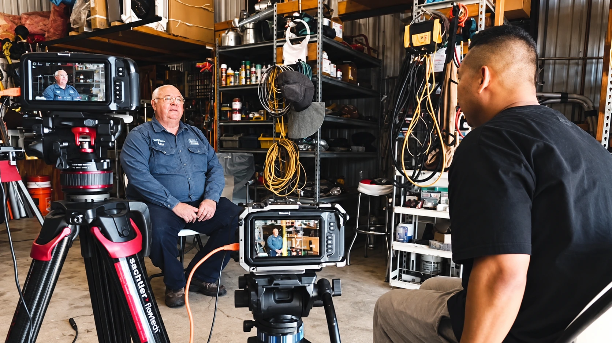
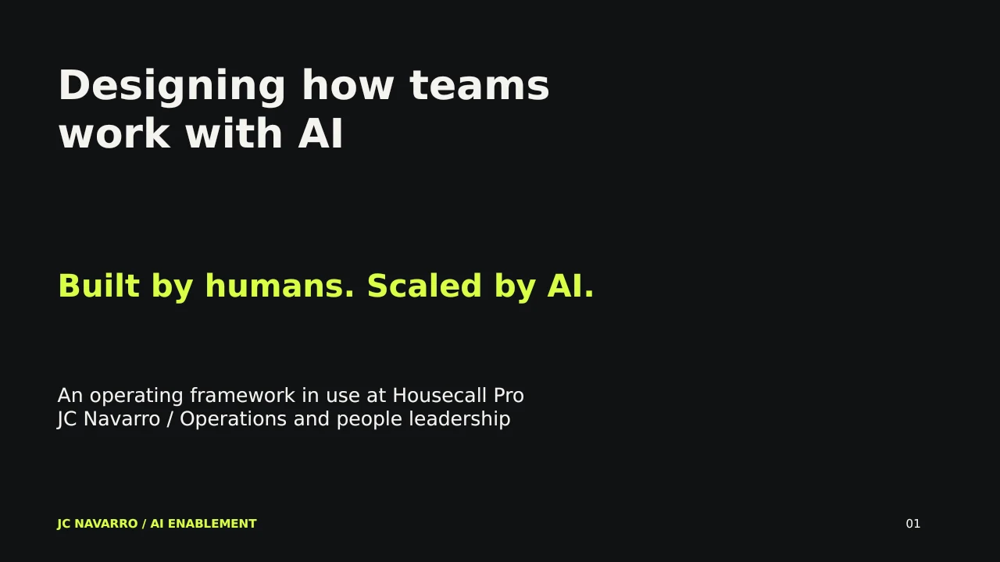
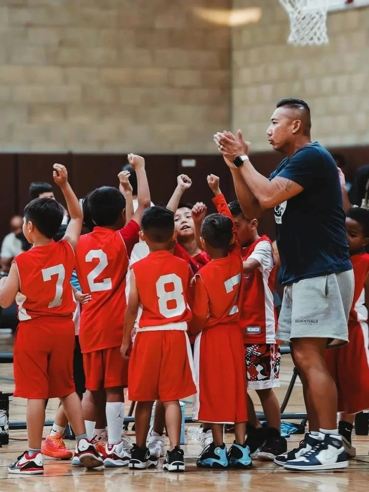
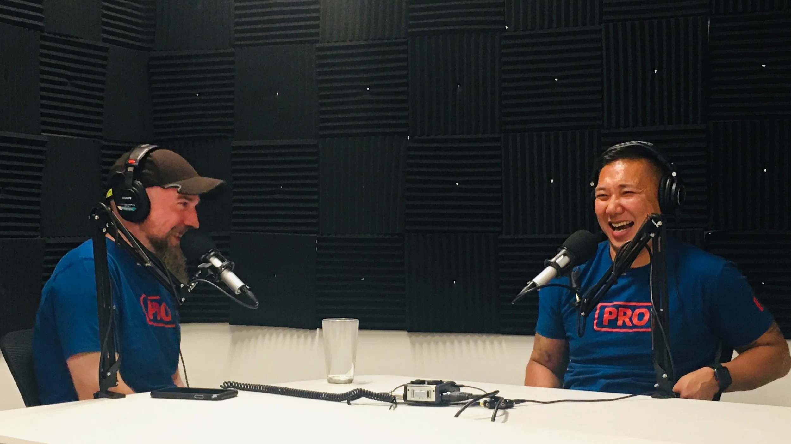

PLATFORM STORY · 2:03
One platform. One connected story.
Product storytelling that translates a broad platform into a clear, benefit-led narrative for home-service professionals.
Creative Director, Performance Marketing
I turn customer insight and performance signals into creative people want to watch—and build the teams, production systems, and testing partnerships that keep the work improving.
I produce creative that connects a real customer need to a clear message, then partner with performance marketing to learn what deserves the next iteration. My work spans product storytelling, industry-specific ads, customer testimony, and scalable campaign production.
Product storytelling that translates a broad platform into a clear, benefit-led narrative for home-service professionals.
An industry-specific performance story shaped around the problems, proof, and product benefits that matter to the audience.
A concise, customer-led execution that puts firsthand experience ahead of a traditional product pitch.
Selected Housecall Pro work produced with cross-functional creative, product, and performance marketing partners. Published by Housecall Pro.
At Housecall Pro, Christopher Root and I connected performance insight to design, video, customer storytelling, and repeatable campaign production. The strongest work came from treating creative and media as one learning system.
Explore Christopher’s growth work ↗JC sat at the intersection of creative and performance, and he made both better. He turns messy, ambiguous asks into clear problem statements and a plan everyone can execute against.
The strategy, production decisions, testing partnerships, and scalable systems behind the work.
Incomplete requests were costing days of clarification. I built a Claude skill that helps requesters work through the requirements before submitting a brief.
I observed typical project turnaround improve from about two weeks to one, giving designers more time to produce the work and develop their craft.
Approximate timings based on my experience across campaigns, event brand kits, web design, logo assets, static ads, and video.
Requests often lacked asset counts, aspect ratios, delivery channels, business objectives, deadlines, or dependencies. Designers and requesters had to resolve those gaps before production could move forward.
I designed a reusable brief generator in Claude that requires requesters to answer the questions needed for a complete handoff. It helps people organize their thoughts and makes missing requirements visible earlier.
After discussing process improvements with my CMO, I introduced the skill at a marketing town hall and rolled it into our marketing help channel. I also saw colleagues begin meeting with stakeholders and building skills for other problems.
More complete briefs reduced clarification cycles. Stakeholders received work sooner, and the creative team gained room for additional projects and craft development. The time estimates describe brief completion and overall delivery separately.

A campaign needed plumbing, electrical, and HVAC companies that each used five specific features. I researched the right candidates and concentrated filming within one region.
All campaign videos delivered.
I used company data through Omni and Snowflake connected to Claude to identify companies that fit the feature requirements, industry, company size, and location. I organized candidate information into sheets and coordinated the budget and filming schedules.
Geography was part of the research criteria from the start. Finding qualified companies close together made a single production week possible and reduced repeated travel.
The approximately $12,000 covered production rentals, contracted help, travel, lodging, and per diem. I recall previous outsourced shoots costing substantially more; the figure here reports this project’s shoot expenses, without treating editing or internal labor as included.
Editors needed interviews that supported three features in a Housecall Pro bundle campaign. The search covered roughly five companies in each of 12 industries.
Relevant material surfaced in minutes, compared with an estimated 30 minutes of manual transcript searching per interview.
Finding the right evidence meant listening to 45–60-minute interviews or searching transcripts manually. The team also needed to know whether the available material could support a particular industry’s video.
I built a Claude workflow to review VTT transcripts and produce a feasibility report with relevant quotes, feature references, and possible video directions. Instructions required preserving the customer’s wording, while timestamps made the material traceable to the interview.
I incorporated Daydream into the process to help assemble video from a brief and let editors watch the source clips. Editors were the primary users. The same approach could also support testimonial research for other teams.
The comparison describes locating relevant material in an individual interview. It is not a measurement of final editing time or a calculated total across the archive.
A designer was receiving direction secondhand. I advocated for his inclusion in stakeholder meetings and coached him to prepare questions and communicate his solutions clearly.
He took greater ownership, made his work more visible, and was promoted within months.
He was the sole designer working on the brand refresh. Being in the meetings gave him direct access to the context behind requests. In our 1:1s, I encouraged a regular set of questions and coached clear communication.
He began proposing and explaining solutions, joining relevant conversations, and reporting his work in shared channels. Greater visibility brought more opportunities to contribute.
My contribution was advocacy and coaching. The design work, growing ownership, and promotion were his achievements. This is the kind of development I enjoy supporting.
Partnering with a Senior Manager of Performance Marketing, I helped produce geo-test campaigns that evolved from voiceover-led scripts to testimonial-led creative.
The team observed stronger engagement and improved click efficiency as customer testimony moved earlier in the story.
Traditional voiceover made the product case, while the customer provided supporting proof. We believed firsthand testimony could create trust sooner and earn more attention.
We first moved testimonials earlier in the script. As engagement strengthened, the team tested ads built entirely around firsthand customer accounts without scripted voiceover.
I partnered on creative development and delivery, bringing production experience, Housecall Pro voiceover, and customer-storytelling judgment to the work. Performance analysis and testing decisions were collaborative with the performance marketing lead.
Cost per click was a primary signal, with click-through rate and CPM also part of the discussion. The direction improved click efficiency; exact campaign figures are not presented here.
I coordinated the contractor team and resources to film 15 home-service professionals in a single month.
A separate production effort from the three-shoot, one-week project above.
I structured an operating framework at Housecall Pro that gives teams a clear way to use AI, with ownership and human judgment built into the process. All three tiers are in use.
Built by humans. Scaled by AI.
Creative owns complex, high-reach work from direction through delivery.
Creative leads the kickoff, uses AI to support execution, and approves the final output. Examples include major campaigns, events, and paid ads.
Stakeholders build with AI. Creative co-pilots, refines, and approves.
Requesters use a skill to build the brief. The work enters the team's queue, and Creative reviews every output before it ships.
Teams handle low-complexity work using Creative-authored skills.
The skill carries the standards so teams can work independently. The requesting team owns the output and escalates work that exceeds the tier's scope.

Explore the roles, approval paths, and workflow examples in an 11-slide portfolio edition of my marketing town hall presentation.
Explore the deck (PDF)Download the editable PowerPoint
Alongside my multimedia role, I led the broader creative team through the end of 2025. The nine-person internal team was under my leadership for most of that assignment; 12 contractors were involved for a shorter period.
I hired two designers and three videographer/editors, handled performance reviews primarily for the video team, and managed contractor budgets, negotiations, contracts, delivery, and relationships.
I enjoy understanding what motivates people, helping them communicate their ideas, and giving them the context to make decisions with confidence.
Perspectives from the people I’ve worked alongside and led.
I worked with JC for more than seven years, starting out as his manager and watching him grow into a leader who built and ran his own team. He now operates at a level most companies would pay a premium to get from an outside agency. He mines potential in others and makes everyone around him better.
JC has a rare ability to combine big-picture strategy with day-to-day execution. He sees people’s strengths, creates opportunities for them to grow, and turns chaos into structure. The amount of strategy he brings to creative work is something you rarely see.
JC leads. His command of strategic coordination and complex problem-solving translates directly into measurable growth. He distills layered, competing stakeholder needs into sharp, actionable briefs—and drives emerging AI tools to help creative teams produce at greater volume with real business impact. Wherever you place him, he creates value.
JC is one of those rare people who have both elite-level creative skills and administrative skills. As productive as JC has been in my time working with him, he’s every bit as much a quality human being. Your team will love having him on board.
I connect the creative craft to the operating discipline: understand the audience, make the message tangible, ship at scale, and turn performance feedback into the next useful test.
Use customer testimony, audience needs, business goals, and available performance signals to define the opportunity.
Turn the insight into hooks, scripts, briefs, visual direction, and a clear hypothesis the team can execute.
Lead internal teams and external partners across video, design, voiceover, budgets, schedules, and quality.
Partner with performance marketing to understand what worked, document the learning, and guide the next variation.
I design the role of AI around the work. In video, AI helps organize the material and build the initial structure. In graphic design, people create the original and AI helps scale it.
Automated intake and executive reporting to organize demand and surface delivery status and constraints.
Skills for image resizing and workflows for inspecting, naming, and organizing footage.
Reusable brand validators to surface inconsistencies for review before creative work is delivered.
I start by listening to the people doing the work and clarifying the business goal. I build around the constraint, explain the decisions, and help the team take ownership. Seeing people continue and improve what we started is a meaningful part of success for me.
Government IT gave me a foundation in technology and systems. Full-time ministry taught me to lead programs, recruit and develop volunteers, communicate clearly, and understand what motivates people. Running a creative business taught me to manage client relationships, budgets, and delivery.
At Housecall Pro, I brought those skills together through hands-on production, recurring brand voiceover, multimedia leadership, an interim creative director assignment, and creative operations. Today I’m focused on Creative Director and Performance Creative leadership roles where I can connect customer insight, strong craft, disciplined testing, AI-enabled production, and team development.
Outside work, I coach youth basketball, spend time with my wife and three kids, and serve in my local community. Helping people see what they’re capable of is a thread that runs through my life.

Performance video, brand voiceover, multimedia management, and creative operations. Interim Creative Director, 2023–2025, alongside my multimedia role.
Founded and ran a creative business alongside ministry, managing clients and production from concept to delivery.
Operations, program building, speaking, volunteer recruitment, and leadership development.
Information Technology Specialist while completing college.
I’m interested in Creative Director and Performance Creative leadership opportunities where strategy, production, data, AI, and people all have to work together.